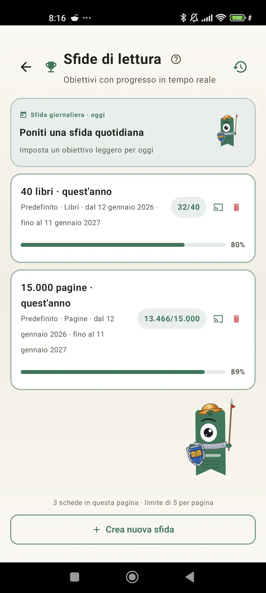

Conosciti meglio come lettore
Sfide, bingo, widget e altre funzioni per sfruttare al massimo le tue letture. Novità della 3.7: widget delle sfide e del bingo.

Sfide di lettura
Imposta obiettivi per pagine, serie o generi. Fino a 15 sfide attive gratis, illimitate con Pro. In più, una sfida giornaliera personalizzabile che non conta per il limite.

Sfida giornaliera
Un nuovo obiettivo ogni giorno. Completa la sfida prima di mezzanotte per mantenere la tua serie.

Bingo di lettura
Due nuovi bingo ogni mese con caselle a tema. Completa righe, colonne o l'intera cartella.

Riepilogo settimanale
Ogni lunedì, uno sguardo alla tua settimana: pagine lette, tempo totale, serie e confronto con quella precedente.

Riepilogo mensile
Quando un mese finisce, Lecturameter lo riassume: pagine, tempo, libri terminati, il tuo ritmo giorno per giorno e il tuo libro del mese.

Widget del bingo Pro
La cartella del bingo del mese, sempre a vista, con le caselle che hai completato e le linee che hai fatto.

Widget del libro Gratis
Vedi il libro che stai leggendo direttamente nella schermata Home: copertina, titolo, autore, pagine e percentuale di progresso, sempre aggiornati. Ridimensionabile per stare dove vuoi.
Sul serio, amico, l'app è come una terapia: sono passato da leggere un paio di pagine al giorno a circa 20 pagine al giorno, e continuo a migliorareCommento di un utente, inviato via email

Confronto mensile Pro
Un colpo d'occhio sui tuoi ultimi mesi senza aprire l'app. Barre con le pagine di ogni mese e il mese corrente in evidenza, per capire subito se questo mese stai andando meglio o peggio del precedente.

Widget delle sfide Pro
Le tue sfide attive e i loro progressi nella schermata Home. Scegli quali mostrare dalla schermata Sfide.